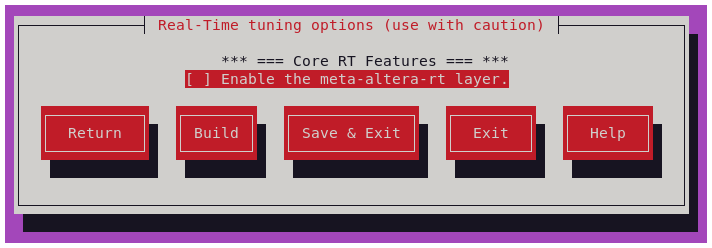

Embedded Linux Real-Time Tuning using Kas/Yocto¶
Introduction¶
Achieving reliable and predictable real-time performance on a Linux-based system is often a challenging task. While Linux provides good general-purpose performance, its default configuration is typically optimized for throughput and fairness rather than deterministic response times. Many embedded and edge applications, however—such as industrial control systems, robotics, video analytics, or network acceleration—require low-latency and consistent behavior under varying workloads.
To address these needs, the system must often be tuned at multiple layers of the software stack. This involves careful configuration of the Arm® Trusted Firmware (ATF), U-Boot, the Linux kernel, and the user-space applications themselves.
This guide, provided by Altera®, offers a collection of recommendations, configuration options, and design practices that can help you adjust your Linux-based environment for near real-time or soft–real-time workloads. The content is based on internal validation for optimizing embedded Linux performance on Agilex™ 5 devices, but the general principles may also apply to other SoC platforms.
Important Notice
The configurations and techniques described in this document are not guaranteed to produce real-time behavior on every system or use case. There is no single “golden” configuration for real-time performance—different applications, hardware configurations, and workloads may require different tuning strategies.
You should evaluate, test, and validate each recommendation individually within your system to ensure it aligns with your performance goals. Use this guide as a starting point for exploration, not as a prescriptive reference.
Scope of This Guide¶
The following sections describe configuration options and recommendations at multiple levels of the system stack:
- ATF level (ONLY FOR Agilex™ 5): Provide higher CHI QoS to a particular set of cores, "cache-way" partitioning, and other L3 cache level configuration.
- U-Boot level: Enable core isolation, core affinity and interrupt affinity using the boot arguments.
- Kernel level: Linux configuration and patching strategies.
- Application level: Best practices for user-space design, including CPU isolation, priority assignment, scheduling policy.
Integration Example with Yocto/Kas¶
Kas is a Python-based lightweight build orchestration layer on top of BitBake/Yocto. Kas allows you to define your build environment in a YAML manifest, so you can perform checkout, environment setup, configuration, and build invocation with a single command.
To illustrate how these configurations can be practically applied, Altera® provides an example implementation using a
Yocto Project–based build system, managed via Kas. The example demonstrates how to define and integrate a dedicated
“layer” that encapsulates real-time–oriented settings through .yml and Kconfig files.
This meta-layer can be easily extended or combined with the HPS Linux Golden System Reference Design, ensuring a reproducible and maintainable workflow for embedded software development.
Even if your system is built using Poky or other Yocto-derived distributions, the recommendations in this guide remain relevant. They can be selectively applied to suit your system’s requirements, whether you are targeting soft real-time responsiveness or pursuing more stringent hard real-time behavior.
Kconfig and Kas/Yocto variables
Note that all Kconfig and Kas/Yocto variables are declared and managed from kas/Kconfig and kas/rt.yml
in the example meta-altera-rt layer.
The provided layer has been validated using GSRD 2.0 for the Agilex™ 5 E-Series Premium Development Kit, but it is readily portable to other Altera® platforms using Yocto/KAS. The table below lists the corresponding verified release tags.
| GSRD 2.0 version | Location | Commit ID/Tag |
|---|---|---|
| HPS GSRD User Guide for the Agilex™ 5 E-Series Premium Dev Kit | https://github.com/altera-fpga/meta-altera-rt | QPDS25.3.1_REL_GSRD_PR |
| HPS GSRD User Guide for the Agilex™ 5 E-Series Premium Dev Kit | https://github.com/altera-fpga/meta-altera-rt | QPDS26.1_REL_GSRD_PR |
Get Started¶
- Get familiar with GSRD 2.0 dependencies, and get access to its source files. See: GSRD 2.0 with Kas Build System
-
Clone the
meta-altera-fpgalayer and follow the Altera® FPGA Real-Time Meta Layer Readme Instructions. You should be able to see"Real-Time tuning options (use with caution)" . Anytime, after applying your settings, press "Build".**Kconfig Real-Time main menu** -
In the GUI, enable the
meta-altera-rtlayer (<Space> selects). The menu will expand.
**Enable the meta-altera-rt layer.** -
Some concepts about the Hard Processor System in Agilex™ 5 SoC FPGA are well described in the Hard Processor System Technical Reference Manual: Agilex™ 5 SoCs.
{kind=link}
{kind=link}
The following sections explain the available configuration options. You can enable all of them or only those relevant to your use case. More importantly, use this as a guide to help you tune your system for soft real-time workloads.
ATF level optimizations for Yocto-Kas build¶
These optimizations are fully explained in the Real-time guide Agilex 5 HPS CPU Cluster Latency. They consist of a set of HPS cluster
configurations that can help in the execution of tasks. The configuration is integrated into the Yocto/Kas build through a
.bbappend recipe that modifies the Arm Trusted Firmware (ATF) build process. The file can be found at:
meta-altera-rt/recipes-bsp/arm-trusted-firmware/arm-trusted-firmware_%.bbappend
two example configurations are provided, each enabled by one of two build variables:
{kind=link}
The following table outlines the available options presented as configuration examples linking them with corresponding Kconfig and Yocto/Kas variables. You can use these two examples as a reference to create more configurations for other cores.
(string) `CONFIG_RT_CORE3_OPT` = "rt-atf-core3"
(bool) `RT_CORE1_OPT` = false
(string)`CONFIG_RT_CORE3_OPT` = "" | `SOCFPGA_RT_FEATURES` =+ "rt-atf-core3"
`SOCFPGA_RT_FEATURES` =+ ""| Adds the assembler fragment `core3_nl3a_cp_qos_plat_helpers.S`
to the ATF build. | | Enable ATF optimizations for core 1. | (bool) `RT_CORE3_OPT` = false
(string) `CONFIG_RT_CORE3_OPT` = ""
(bool) `RT_CORE1_OPT` = true
(string) `CONFIG_RT_CORE3_OPT` = "rt-atf-core1" | `SOCFPGA_RT_FEATURES` =+ ""
`SOCFPGA_RT_FEATURES` =+ "rt-atf-core1" | Adds the assembler fragment `core1_nl3a_cp_qos_plat_helpers.S`
to the ATF build. | | None. | (bool) `RT_CORE3_OPT` = false
(string) `CONFIG_RT_CORE3_OPT` = ""
(bool) `RT_CORE1_OPT` = false
(string) `CONFIG_RT_CORE3_OPT` = "" | `SOCFPGA_RT_FEATURES` =+ ""
`SOCFPGA_RT_FEATURES` =+ "" | No change in ATF. |
The following table explains the contents of the ATF helper fragment (core3_nl3a_cp_qos_plat_helpers.S), which is
added by the .bbappend file to the plat/intel/soc/common/aarch64/plat_helpers.S file within the ATF source code.
| Example of an ATF plat_helper.S fragment | Line description | | :----------------------------------: | ---- | |{:style="display:block; margin-left:auto; margin-right:auto;"} |
-
the code is used to identify the core.
`Way groups 1,2,3` to `Scheme ID 0`. Each "way group" holds
"4 cache ways" hence it covers the 16 available cache ways in this cluster,
this enables "Cache Partitioning" (`cp`). See: **[CLUSTERPARTCR]**
(highest priority), to `Scheme ID 1` and sets CHI QoS `"0"`
to `Scheme ID 0` (`qos`). See: **[CLUSTERBUSQOS]**
and "Thread Scheme ID Register enable". See: **[ACTLR_EL3]**
second A76) to `Scheme ID 1`. By default other
cores will be assigned to `Scheme ID 0`. See: **[CLUSTERTHREADSID]** |
You should evaluate and select the most appropriate options for your platform and application. You can enable or
disable the "No L3 Allocate Mode" (nl3a), "Cache Partitioning" (cp), and/or adjust the "HIC Quality
of Service" (qos) by enabling/disabling and /or incrementing/decrementing these settings for one or more
cores within the cluster. Similarly, you can assign cache Way Groups and cores to specific Scheme IDs,
while setting the "QoS priority" for those Scheme IDs.
The previous fragment is favouring Core 3, assigning it to Scheme ID 1 that has higher HIC QoS than other
Scheme IDs and a ¼ of the cache is allocated to said Scheme ID.(Note that at this point, no core is
isolated).
The provided example serves as a starting point for integrating these modifications into your Kas/Yocto build.
Core Isolation, Interrupt affinity, Tickless and RCU Settings¶
Core Isolation involves dedicating specific CPU cores to handle real-time tasks, preventing them from being interrupted by non-real-time processes. This helps ensure consistent performance and reduces latency.
Interrupt Affinity refers to the assignment of interrupts to specific CPU cores. By binding interrupts to dedicated cores, you can optimize system responsiveness and prevent shared resource contention, ensuring that time-sensitive operations are handled by the most appropriate cores.
You can configure core isolation and interrupt affinity using a combination of U-Boot boot arguments and kernel settings.
Modify boot arguments¶
The bootargs are added to a u-boot-env.txt (or similar) using an u-boot_script.its
In this example the arguments are modified in the GUI with the following options:
{kind=link}
You must select which cores to isolate and define the ones that handle interrupts. Typically, you should keep interrupts off the isolated cores to prevent interference with real-time workloads. In the figure below, you isolate cores 1 and 3 for dedicated applications, while cores 0 and 2 handle system interrupts.
The following table shows the available options and how they map to the corresponding Kconfig and Yocto/Kas variables.
The nohz_full= parameter in U-Boot's bootargs enables full dynticks (also known as "No HZ Full") mode
in the Linux kernel at boot time. When this option is set, it instructs the kernel to run certain CPU
cores in a mode where the kernel avoids timer interrupts on those cores, effectively preventing any
unnecessary context switches or interrupts, which is particularly useful for real-time and low-latency
applications.
By specifying which CPUs should enter "No HZ Full" mode (e.g., nohz_full=1 for CPU 1), the system ensures that these cores are dedicated to time-sensitive tasks without interruptions from the periodic tick of the kernel’s scheduler. This can improve performance for workloads that require predictable, low-latency processing.
Note
In this example, "No HZ Full" mode is applied to the isolated cores defined by CPU_ISOL.
However, you should evaluate whether this setting is suitable for your system, as it may not be
appropriate for all platforms. In some cases, enabling "no Hz Full" can actually degrade real-time
performance, depending on the specific workload and system configuration.
rcu_nocbs stands for RCU "no callback CPUs" and tells the kernel not to run RCU callbacks on certain CPUs.
Normally, each CPU handles its own RCU callbacks, which free memory or complete deferred work. Using
rcu_nocbs offloads these callbacks to other CPUs, which is useful in real-time or latency-sensitive
systems to prevent RCU processing from interfering with critical tasks on designated CPUs.
RCU callback processing.
Consider adding rcu_nocbs=<cpu_list> to your boot arguments. Normally, every CPU runs RCU
(Read-Copy-Update) callbacks. When using rcu_nocbs in the isolated core list, the isolated cores
will participate in RCU read-side sections but they won’t be interrupted by RCU housekeeping work.
The CPU Isolation, IRQ affinity, Tickless and RCU Settings u-boot environment arguments are added using the
Kas configuration file meta-altera-rt/kas/rt.yml
Modify kernel configuration¶
Additional kernel configuration is needed to apply "Core Isolation" and "Interrupt Affinity" to your system.
This kernel configurations settings are applied using the example file
meta-altera-rt/recipes-kernel/linux/linux-socfpga-rt.inc which appends the file config/rt-*.scc
(subsequently config/config_rt-*.cfg)
CONFIG_CPU_ISOLATION=y: This ensures that the isolated cores (defined inisolcpus=) are not scheduled to run regular tasks, which helps minimize interference from background processes.CONFIG_GENERIC_IRQ_AFFINITY=y: When enabled, the kernel accepts the irqaffinity= boot argument and parses the CPU mask (irq_default_affinity) to set IRQ affinities when devices register their interrupts.CONFIG_ARM64_PSEUDO_NMI=y: Enables support for pseudo Non-Maskable Interrupts (NMIs) on ARM64-based systems. Pseudo NMIs are used to handle high-priority, low-latency interrupts that cannot be masked by the CPU's interrupt controller.CONFIG_NO_HZ_FULL=y: Instructs the kernel to run in "No HZ Full" mode, where certain CPUs (as defined by thenohz_full=boot parameter) do not receive regular timer interrupts. This reduces the overhead caused by the kernel's periodic scheduler tick and ensures that the isolated CPUs can handle real-time tasks.CONFIG_RCU_NOCB_CPU=y: Thercu_nocbs= boot argumentandCONFIG_RCU_NOCB_CPUkernel configuration work together to control RCU callback execution on specific CPUs. WhenCONFIG_RCU_NOCB_CPUis enabled, the kernel supports assigning certain CPUs as “no-CBs” CPUs, meaning they will not execute RCU callbacks.
These three kernel configuration options can be applied through the Kconfig GUI by selecting the corresponding
"Enable
{kind=link}
(string) `CONFIG_EN_CORE_ISOL` | `SOCFPGA_RT_FEATURES` =+ `rt-core-isol` | If `rt-core-isol` the Linux kernel is compiled with
`CONFIG_CPU_ISOLATION=y` | | Enable interrupt affinity | (bool) `EN_IRQ_AFF`
(string) `CONFIG_EN_IRQ_AFF` | `SOCFPGA_RT_FEATURES` =+ `rt-irq-aff` | If `rt-irq-aff` the Linux kernel is compiled with
`CONFIG_GENERIC_IRQ_AFFINITY=y` and `CONFIG_ARM64_PSEUDO_NMI=y` | | Enable full tickless mode (NO_HZ_FULL) | (bool) `EN_NO_HZ_FULL`
(string) `CONFIG_EN_NO_HZ_FULL` | `SOCFPGA_RT_FEATURES` =+ `rt-no-hz-full` | If `rt-no-hz-full` the Linux kernel is compiled with
`CONFIG_NO_HZ_FULL=y` | | Disable RCU callbacks (RCU_NOCB) | (bool) `EN_RCU_NOCBS`
(string) `CONFIG_EN_RCU_NOCBS` | `SOCFPGA_RT_FEATURES` =+ `rt-rcu-nocbs` | If `rt-rcu-nocbs` the Linux kernel is compiled with
`CONFIG_RCU_NOCB_CPU=y` |
Note
This is just an example of how to enable or disable Linux kernel configurations
using Kconfig and Kas/Yocto variables, applied through configuration fragments (.cfg and .scc)
added via .bbappend and .inc files. You have the flexibility to choose or modify the
variables and configurations, as well as decide where to place them within your build system.
The combination of boot arguments, kernel configuration options, and the specified list of cores ensures that your system will have a set of isolated cores, as well as a separate set of cores dedicated to handling system interrupts.
Setting Interrupt Affinity (IRQ Affinity)¶
At times, you may need to assign a specific hardware interrupt to a target core. This can be achieved in Linux
by configuring the smp_affinity. Start by identifying the interrupt number with the following steps:
{kind=link}
If you want to allocate interrupt 53, which is subscribed to the interval_timer (which is a device in the
FPGA fabric), to core 2, you can modify the smp_affinity as follows:
In this case, the value 4 (binary 0100) corresponds to core 2. Similarly, a value of 2 (binary 0010) would allocate the interrupt to core 1.
Kernel level optimizations for Yocto/Kas build¶
The Real-Time (RT) patch, often referred to as PREEMPT_RT, is a set of modifications to the standard
Linux kernel that transforms it into a fully preemptive real-time operating system (RTOS). Its main
goal is to reduce system latency and make task scheduling more deterministic, ensuring that
high-priority tasks execute within predictable time bounds. In the standard Linux kernel, certain
sections of code are non-preemptible, meaning a high-priority task must wait until the kernel
finishes critical operations before it can run. This behavior introduces unpredictable latency,
which can be problematic for real-time applications such as industrial control, robotics, networking,
or audio processing.
This section demonstrates how easily you can apply the PREEMPT-RT patch to the Linux kernel for
Altera® devices using the Kas/Yocto infrastructure, transforming your system into a near-real-time
environment. Note that Linux is not a hard real-time operating system, and Altera® Agilex™ devices
feature an ARM cluster composed exclusively of A-class cores.
Enabling this functionality requires applying the appropriate Linux kernel patch from the PREEMPT_RT patch versions repository and configuring the corresponding Linux kernel options.
The RT_PREEMPT Kernel patch and Kernel configurations can be applied through the Kconfig GUI by selecting “Add kernel PREEMPT-RT patch”.
{kind=link}
(string) `CONFIG_REALTIME_PATCH` | `SOCFPGA_RT_FEATURES` =+ ` rt-patch` | If `rt-patch` the Linux kernel is patched and configured with
`CONFIG_PREEMPT_RT=y`, `CONFIG_HIGH_RES_TIMERS=y` and `CONFIG_IRQ_FORCED_THREADING=y` |
The CONFIG_PREEMPT_RT option enables full kernel preemption for real-time responsiveness. CONFIG_HIGH_RES_TIMERS
activates high-resolution timers, allowing the kernel to use hardware timers with nanosecond precision instead of
relying on periodic timer ticks. With this option enabled, the system can schedule events and wake-ups with much
finer granularity. CONFIG_IRQ_FORCED_THREADING Forces hardware interrupt handlers to run as kernel threads
rather than in the traditional hard interrupt context. This allows interrupts to be scheduled and prioritized
using standard Linux scheduling mechanisms.
RT_PREEMPT Patch
The patch is applied through the linux-socfpga-lts_<ver>.bbappend file, while the kernel configuration is
managed using the linux-socfpga-rt.inc file, which includes .cfg and .scc fragments. You can select or
change the PREEMPT_RT patch version by modifying the RT_LINUX_VERSION and RT_PATCH_VERSION variables, and
add additional kernel configurations as needed.
Application Level: Recommended Real-Time utilities¶
Linux standard Utilities¶
Some useful Linux-standard applications for quickly evaluating the configurations described above include:
- rt-tests: A collection of tools for measuring and validating real-time performance on Linux systems (e.g., cyclictest, hwlatdetect, hackbench).
- util-linux: A set of fundamental system utilities for Linux, including tools for managing partitions, mounts, and processes.
- cpufrequtils: Utilities for controlling and monitoring CPU frequency scaling, useful for managing performance and power trade-offs.
- htop: An interactive process viewer and system monitor that provides real-time CPU, memory, and task usage information
You can add these packages to the root filesystem by using the IMAGE_INSTALL:append directive within the
Yocto/Kas configuration file kas/rt.yml using the variable rt-utils. You can append any additional
utilities that you consider necessary for your real-time evaluation.
Custom Utilities¶
- System Register Dump: Custom Linux module that allows displaying register configuration described
in ATF level optimizations for Yocto-Kas build. The
system module source
system_reg_dump.cis compiled whenrt-utilsvariable is enabled.
-
Cyclictest and Hackbench script: A script to run cyclictest in a core of your choosing while running hackbench recurrently in non-interest cores. Useful to measures the difference between a thread's intended wake-up time and the time at which it actually wakes up while the system is upset by running multiple instances of hackbench (stress test for kernel scheduler, parts of memory subsystem and inter-process communication).
Usage:
run_cyclictest_hackbench-core --iterations <#> --board <name> --priority <#> --max_us_scale <#> --loops <#> --interval <#> --core <#>iterations: Number of timescyclictestcommand will execute.board: Board name used for reference and to generate an output file.priority: Execution priority ofcyclictest.max_us_scale: Maximum histogram value in microseconds.loops: Number of interrupts to measure in each iteration.interval: Interval between interrupts, in microseconds.core: CPU core on whichcyclictestis executed.
An additional histogram plotter script installs with the tools. You can use it to find previously generated
output_files and create the corresponding plots. Just run rt-plot-generator in the directory where your histograms were generated.
To install both Linux and custom utilities enable them in the Kconfig GUI
{kind=link}
Application Level: Check your system configuration at Runtime¶
RT_PREEMPTpatch was successfully applied.
- Obtain kernel config and settings in runtime.
- Display register configuration described in ATF level optimizations for Yocto-Kas build.
-
Show core isolation and nohz_full settings.
- You can see what command line parameters were passed into the kernel.
- See interrupt handling by core.
- Evaluate the system’s runtime behavior and monitor CPU usage, memory, and task activity using
htop.
{kind=link}
The previous figure shows the CPU utilization when running the custom utility run_cyclictest_hackbench-core
You can observe the hackbench instances running on cores 0 and 2, which act as non-isolated cores, while
core 1 stays idle because you isolated it. The cyclictest threads run on core 3, another isolated core
that you designated for the real-time workload in this example.
Application Level: Core Affinity and Scheduling policy¶
You can define core affinity and scheduling policies using standard Linux utilities or directly in your programs. The following examples show how you can modify these settings. Keep in mind that this is not an exhaustive list of options or recommendations, but a starting point for developing and running your applications.
Taskset and chrt in Linux¶
In Linux, you can use the taskset command to set CPU affinity for processes. This allows you to bind a
process to one or more specific CPU cores. To bind a process to specific CPUs, use the taskset
command followed by the CPU mask:
Changing Scheduling Policies via taskset and chrt utilities
Where -f specifies SCHED_FIFO policy, and you can replace it with -r for SCHED_RR, -i for SCHED_IDLE, etc. 50
is the priority level for real-time policies (SCHED_FIFO and SCHED_RR), where 1 is the lowest and 99 is the highest.
You can use other tools like nice utility when using the default time-sharing scheduler (SCHED_OTHER).
Available Scheduling Policies for Real-Time¶
These policies let you control task priority and execution for real-time workloads.
Basic Real-Time Thread creation in C programming¶
In C, setting CPU core affinity is done using the sched_setaffinity() system call, which allows
you to bind a process or thread to specific processor cores. The following code snippet provides
a starting point for adding CPU affinity control to your application.
#include <sched.h>
#include <stdio.h>
#include <unistd.h>
int main() {
cpu_set_t cpuset;
// Clear the cpuset (set all CPUs to 0)
CPU_ZERO(&cpuset);
// Set CPU core 0 in the cpuset
CPU_SET(0, &cpuset);
// Get the PID of the current process
pid_t pid = getpid();
// Set the CPU affinity of the current process
if (sched_setaffinity(pid, sizeof(cpu_set_t), &cpuset) == -1) {
perror("sched_setaffinity failed");
return 1;
}
printf("Process bound to CPU 0\n");
(...)
Alternatively, you can create a thread with a defined CPU affinity to ensure it runs on specific cores, while setting a fixed execution period and choosing a scheduling policy that controls its priority and timing behavior.
/*Real-Time thread parameters*/
#define THREAD_CYCLE_TIME_MS 0.25
#define CLOCKID CLOCK_REALTIME
#define MSECONDS_TO_NS (1000 * 1000)
#define SECONDS_SLEEP_TO_START 1
pthread_t userThreadID;
static int userThreadPriority = 90;
static int userThreadCore = 3;
static double threadCycleInMsec = THREAD_CYCLE_TIME_MS;
typedef struct {
unsigned int *data;
int *more_data;
bool *signalTerm;
} threadArg;
void nsOverflowCheck(struct timespec *expectedTime) {
while (expectedTime->tv_nsec > (SECONDS_T0_NS - 1)) { //If the expected ns is more than a second then
expectedTime->tv_sec += 1; //Increment seconds by 1
expectedTime->tv_nsec -= SECONDS_T0_NS; // clean out the ns portion of the expected
}
}
void *userAppThread(void *arg) {
struct timespec nextWakeUpTime;
struct timespec threadStartTime;
unsigned int *data;
int *more_data;
bool *signalTerm;
threadArg *threadArgumentsApp = (threadArg *)arg;
data = threadArgumentsApp->data;
more_data = threadArgumentsApp->qep_ptr;
signalTerm = threadArgumentsApp->signalTerm;
clock_gettime(CLOCKID, &threadStartTime); //need to get the current time
threadStartTime.tv_sec += SECONDS_SLEEP_TO_START; //add some seconds into the future, this can be zero
threadStartTime.tv_nsec = 0;
nextWakeUpTime.tv_sec = threadStartTime.tv_sec; //copy the value of seconds to the next start time
nextWakeUpTime.tv_nsec = threadStartTime.tv_nsec; // there could be some adjustment if needed
nsOverflowCheck(&nextWakeUpTime); //check the ns to see if it overflowed into seconds
while (!(*signalTerm)) { //runs forever but a flag can be created to stop it
clock_nanosleep(CLOCKID, TIMER_ABSTIME, &nextWakeUpTime, NULL); //This thread wakes up until the time calculated by nextWakeUpTime
user_function(data, more_data); //do the user function
nextWakeUpTime.tv_nsec += (__syscall_slong_t)(threadCycleInMsec * MSECONDS_TO_NS); //recalculate the next wake up time
nsOverflowCheck(&nextWakeUpTime); //check the ns to see if it overflowed into seconds
}
free(threadArgumentsApp);
return NULL;
}
pthread_t createThread(int priority, size_t affinity, void *(*thread)(void *), char *userAppName, void *arguments) {
cpu_set_t cpu; // Variables to set core affinity
pthread_t threadIdentifier;
struct sched_param schedulerParams;
int setParamsReturn = 0;
int errorAffinity = 0;
threadIdentifier = pthread_self(); // Contains the ID for the thread
schedulerParams.sched_priority = priority;
setParamsReturn = pthread_setschedparam(threadIdentifier, SCHED_FIFO, &schedulerParams);
if (setParamsReturn != 0) {
printf("Could not create Schedule Parameters: pthread_setschedparam\n");
exit(1);
}
printf("successful pthread_setschedparam:%s priority is %d\n", userAppName, schedulerParams.sched_priority);
CPU_ZERO(&cpu);
CPU_SET(affinity, &cpu);
errorAffinity = pthread_setaffinity_np(threadIdentifier, sizeof(cpu_set_t), &cpu);
if (errorAffinity) {
fprintf(stderr, "pthread_setaffinity_np function failed: %s\n", strerror(errorAffinity));
exit(1);
}
setParamsReturn = pthread_create(&threadIdentifier, NULL, thread, arguments); //note here the argument passed to the thread
if (setParamsReturn != 0)
printf("Creation of the thread failed: pthread_create\n");
if (CPU_ISSET(affinity, &cpu))
printf("Using CPU CORE: %lu\n", (unsigned long)affinity);
return threadIdentifier;
}
(...main)
/* -- Create Real-Time thread for User Application ----*/
threadArg *threadArguments = (threadArg *) malloc(sizeof(threadArg));
threadArguments->data = data;
threadArguments->more_data = more_data;
threadArguments->signalTerm = signalTerm;
char threadName[22] = "UserAppThread";
userThreadID = createThread((int) userThreadPriority, (size_t)userThreadCore, userAppThread, threadName, threadArguments);
(...main)
Notices & Disclaimers¶
Altera® Corporation technologies may require enabled hardware, software or service activation. No product or component can be absolutely secure. Performance varies by use, configuration and other factors. Your costs and results may vary. You may not use or facilitate the use of this document in connection with any infringement or other legal analysis concerning Altera or Intel products described herein. You agree to grant Altera Corporation a non-exclusive, royalty-free license to any patent claim thereafter drafted which includes subject matter disclosed herein. No license (express or implied, by estoppel or otherwise) to any intellectual property rights is granted by this document, with the sole exception that you may publish an unmodified copy. You may create software implementations based on this document and in compliance with the foregoing that are intended to execute on the Altera or Intel product(s) referenced in this document. No rights are granted to create modifications or derivatives of this document. The products described may contain design defects or errors known as errata which may cause the product to deviate from published specifications. Current characterized errata are available on request. Altera disclaims all express and implied warranties, including without limitation, the implied warranties of merchantability, fitness for a particular purpose, and non-infringement, as well as any warranty arising from course of performance, course of dealing, or usage in trade. You are responsible for safety of the overall system, including compliance with applicable safety-related requirements or standards. © Altera Corporation. Altera, the Altera logo, and other Altera marks are trademarks of Altera Corporation. Other names and brands may be claimed as the property of others.
OpenCL* and the OpenCL* logo are trademarks of Apple Inc. used by permission of the Khronos Group™.